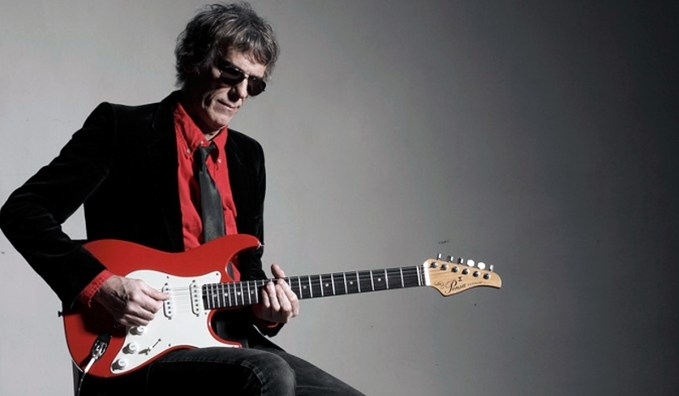
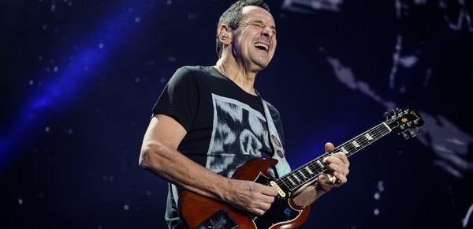

Los Mejores Guitarristas del Rock Argentino
El rock argentino ha sido cuna de innumerables talentos que han dejado una marca indeleble en la historia de la música. Entre ellos, los guitarristas han destacado por su virtuosismo, creatividad y capacidad para innovar dentro del género. A continuación, exploraremos algunos de los mejores guitarristas que han surgido de la escena del rock argentino, figuras cuya influencia y legado continúan resonando en la actualidad.
1. Luis Alberto Spinetta
(1950-2012) Conocido como "El Flaco", Luis Alberto Spinetta es una figura fundamental en el rock argentino. Aunque es más famoso como cantante y compositor, su habilidad con la guitarra es indiscutible. Spinetta fue un innovador que experimentó con diferentes estilos y técnicas, fusionando rock, jazz y música progresiva. Su trabajo con bandas como Almendra y Pescado Rabioso, así como su carrera solista, muestra su maestría en la guitarra y su capacidad para crear atmósferas musicales únicas.
2. Gustavo Cerati
(1959-2014)
Como líder de Soda Stereo y luego en su carrera solista, Gustavo Cerati es uno de los músicos más influyentes de Latinoamérica. Su estilo de guitarra se caracteriza por una mezcla de precisión técnica y sensibilidad melódica. Canciones como "De Música Ligera" y "En la Ciudad de la Furia" destacan su habilidad para crear riffs memorables y solos emocionantes. Cerati no solo dejó una huella imborrable en el rock argentino, sino que también elevó el estándar para guitarristas en toda la región.
3. Norberto "Pappo" Napolitano
(1950-2005)
Apodado "El Carpo", Pappo es considerado uno de los padres del rock y el blues en Argentina. Su virtuosismo con la guitarra y su pasión por el blues lo convirtieron en una leyenda. Con bandas como Pappo's Blues y Riff, demostró una destreza técnica impresionante y un profundo conocimiento del género. Pappo fue un pionero que inspiró a generaciones de guitarristas y dejó un legado duradero en la música argentina.
4. Ricardo Mollo
(1957-Act.) Ricardo Mollo, guitarrista y vocalista de Divididos, es reconocido por su estilo versátil y enérgico. Su capacidad para combinar elementos del rock, folk y música tradicional argentina en su forma de tocar la guitarra le ha ganado un lugar especial en el corazón de los fanáticos. Con su banda, ha creado algunos de los riffs más icónicos del rock argentino, como en "El 38" y "Par Mil". Mollo es conocido por su técnica impecable y su habilidad para improvisar en vivo, lo que lo convierte en uno de los guitarristas más respetados del país.
5. David Lebón
(1952-Act.)
David Lebón ha sido una figura central en algunas de las bandas más importantes del rock argentino, como Serú Girán y Pescado Rabioso. Su estilo de guitarra es conocido por su lirismo y emotividad, con una habilidad especial para los solos melódicos. Lebón ha influido en muchos músicos jóvenes y su contribución a álbumes clásicos del rock argentino sigue siendo celebrada.
6. Skay Beilinson
(1952-Act.)Skay Beilinson, co-fundador y guitarrista de Patricio Rey y sus Redonditos de Ricota, es conocido por su estilo distintivo y atmosférico. Su habilidad para combinar el rock clásico con toques psicodélicos y su técnica innovadora han dejado una huella profunda en la música argentina. Después de la disolución de los Redondos, Skay continuó su carrera solista, donde sigue explorando nuevos sonidos y manteniendo su relevancia en la escena musical.
Conclusión
El rock argentino ha producido una plétora de talentosos guitarristas que han definido y redefinido el género a lo largo de los años. Desde los innovadores y experimentales hasta los virtuosos del blues y el rock, estos músicos no solo han influenciado a sus contemporáneos, sino que también han inspirado a nuevas generaciones de guitarristas. Su legado es una prueba del poder y la creatividad que emana de la escena del rock argentino.